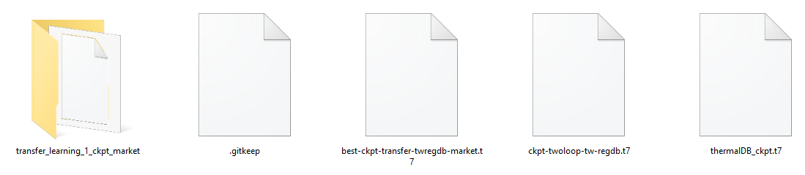
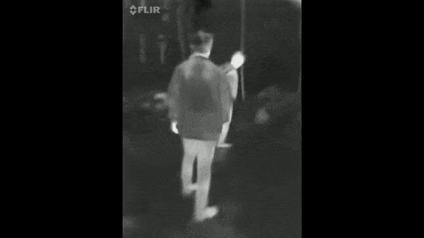

Reidentification using YOLOv7 and DeepSORT
This documentation serves as a guide for developers on the integration of YOLOv7 and DeepSORT for Reidentification Task.
Released Versions:
Pretrained-base v0.1 This is the first release of the pretrained weight for thermal datasets.
Architecture

This ReId algorithm is built with YOLO and DeepSORT on Python 3.7.16. The dependencies will be listed inside the requirements.txt from the repo.
Getting Started
Minimum Requirements
As of February 2024, a minimum GPU that supports CUDA version of 11.6 is needed for this
Installing Conda
To ease the configuration of Python and it's dependencies, we will use Conda for this.
Important: The virtual environment used can be downloaded here.
Configuring Tensorflow and PyTorch
To allow the use of Tensorflow and PyTorch, respective CUDA and Cudatoolkit is required.
Please refer to these respective guides for CUDA (Windows)
, CUDA (Linux),
Tensorflow
, and Pytorch.
For reference, in
this project, I used tensorflow 1.15, pytorch 1.13+cu116 with torchaudio and torchvision.
Please also make sure that the environment variables are correctly configured.
Datasets and Pretrained Weights
A market-1501-based custom dataset compiled from ThermalDB, RegDB, market-1501, and my own IndoThermal is used on this project. The pretrained weights can be accessed from this url.
The weights are pre-trained in market-1501-based COCO dataset format and
then fine-tuned to a market-1501-based custom thermal dataset with 9360 pictures and 751 classes.
To train the YOLOv7, roboflow is used to ease the dataset format preprocessing required for the model, which then can be trained in Google Colab or locally. In this walktrough, Google Colab will be used to train the YOLO model.
To train the DeepSORT tracker, please first make sure that the conda environment, CUDA, tensorflow, and pytorch configuration in your system is configured correctly.
Since this walktrough will train the DeepSORT tracker locally, please refer to guides given previously.
YOLOv7 Custom Dataset Transfer Learning
Training on custom dataset
These guides can be used to train YOLOv7 with custom dataset
. To simplify, you can use this notebook in my repo for training YOLO. For this project,
I used roboflow to simplify image annotation and deployment to
google colab for training.
Note that for training the model in the given notebook, you will need to change this part of the code,
!pip install roboflow
from roboflow import Roboflow
rf = Roboflow(api_key="your api key")
project = rf.workspace("your workspace").project("your project")
dataset = project.version("your version").download("your project")with your given code snippet in your roboflow project
Training Evaluation
For validation and evaluation purposes, the algorithm will produce several evaluation parameters. You can see
these evaluation parameters will training the algorithm in the form of text and graph when finished. One of these
evaluation parameters is these graphs,
Standalone Testing and Inference
If you want to do standalone image detection, this guide can be used to test the standalone image detection algorithm of YOLO. But, in order to do object reidentification, a tracker algorithm with identification support is needed. This concludes to the use of DeepSORT for later inference.
Save the Weight for Later Reidentification Inference with DeepSORT
After training the YOLOv7 model, you will obtain several weight with the .pt format. These weights will be contained in folders inside runs/detect/trainX, with X representing the version of the weight, directory in your YOLO folder.
These folders will also be accompanied with the evaluation parameters for each weight folders. Therefore, choose the best result according
to your preference since this will highly impact the performance of the reidentification algorithm later.
This is the example of the weight files and the weight folders obtained after training YOLOv7,
DeepSORT Weight Custom Dataset Transfer Learning
For the tracker, this project uses the DeepSORT model with PyTorch. It is based on this repo by ZQPei.
Environment Setup
Make sure that the conda environment here is downloaded. Create an environment from the .yml file using this code,
conda env create -f env-torch1131.yml
This will create an environment with the name torch1131 in your conda virtual environment. This conda yml file already includes tensorflow, pytorch, and other related dependencies for training the DeepSORT tracker.
You can also install the dependencies using pip from the requirement.txt provided in the Github repo.
Dataset Setup
In order to train the DeepSORT model, the dataset needs to be cropped in the market-1501 format. You can refer to this research paper
and this Kaggle dataset.
Basically, in market-1501, you create 2 folders for training and testing (no validation)
the DeepSORT tracker model. Notice that the number of folders inside
the train and test folders are the same, this implies that the PyTorch DeepSORT tracker will then be trained and tested like a
classification-based task for each class inside the test folder.
The frames that are used to train and test DeepSORT differs from YOLO. The data to train DeepSORT are cropped by its bounding box.
Meanwhile, the data to train YOLO are not cropped by its bounding box.
The market-1501 dataset folder formatting is as followed,

In the test folder, it is recommended to only put 1 picture. On the other hand, in the train folder, you can put as picture as you want.
To ease the naming and data preprocessing of DeepSORT training, this project also provides some scripts to create a market-1501-based folder and crop pictures by the bounding box in the YOLO dataset format. My repo can be used to access these scripts.
The steps to format the dataset for training DeepSORT using the scripts provided is as followed,
- If you wnat to convert the dataset from YOLO picture format to DeepSORT picture format, use the YOLOtoDeepSORTcropper.py script.
- Create the market-1501-based dataset folder using marketFolderFormatter.py script in desired path.
- Populate the pictures with the same object inside all the classes inside the train folder. For example, all the pictures of person 1 are put inside the 1st class, then the pictures of person 2 are put inside the 2nd class, etc.
- Execute trainTestMarketSplitter.py script to split the train and test folders.
Training the DeepSORT Tracker
To train this tracker, access the training/deepsort folder. To train the DeepSORT model, you need to specify the dataset directory by customizing the --data-dir by running this code snippet in the CLI.
cd DEEP_SORT/DEEP DIRECTORY conda activate torch1131 train.py --data-dir="MARKET-1501-BASED DATASET"
Training Evaluation
If all the configuration and data are configured correctly, you will obtain this graph,
It is important that the loss and top1err of both train and val are approaching 0. Otherwise, there is something wrong with your setup (usually it's the dataset configuration, make sure that there are no duplicate images for different train and test folder).
Save the DeepSORT Tracker Weight
After training the DeepSORT model, you will obtain a weight in the format of .t7 inside the deep_sort/deep/checkpoint folder of the DeepSORT PyTorch directory. This weight will then be passed along with the .pt YOLO weight that we have obtained beforehand.

DeepSORT-YOLOv7 Reidentification
DeepSORT-YOLOv7 ReId Configuration
The DeepSORT-YOLOv7 reidentification program is provided here. But, in order to run the algorithm, you need access and download this folder.
For the sake of simplification, you can open the program via Google Colab, upload the folder to your Google Drive, and connect your Google Colab to Google Drive.
You also need to configure the DeepSORT checkpoint folder and DeepSORT config yaml file inside the DeepSORT-YOLOv7 Reidentification folder that we downloaded.
The checkpoint folder can be accessed in yolov7/deep_sort/deep/checkpoint directory. Copy the DeepSORT checkpoint inside the folder.
Meanwhile, the config file can be accessed in yolov7/deep_sort_pytorch/configs directory with the name deep_sort.yaml.
For this config file, change the
DEEPSORT: REID_CKPT: "deep_sort_pytorch/deep_sort/deep/checkpoint/best-ckpt.t7" MAX_DIST: 0.165 MIN_CONFIDENCE: 0.4125 NMS_MAX_OVERLAP: 0.525 MAX_IOU_DISTANCE: 0.725 MAX_AGE: 70 N_INIT: 3 NN_BUDGET: 100with
REID_CKPT: "DEEPSORT_NEW_CHECKPOINT_FILE_PATH.t7"
You can also fine-tune the other tracker parameters to achieve satisfactory results.
Before inference, you also need to change several lines of code inside the DeepSORT-YOLOv7 Reidentification notebook. Change the
!python detect_track.py --weights trainingyolov7/bestv7.pt --img 640 --source testing/test7split.mp4with
!python detect_track.py --weights NEW_YOLOV7_WEIGHT_PATH.pt --img 640 --source NEW_VIDEO_INFERENCE.videoformat
Reidentification Inference
After running the code snippet,
!python detect_track.py --weights NEW_YOLOV7_WEIGHT_PATH.pt --img 640 --source NEW_VIDEO_INFERENCE.videoformatYou will obtain the inference result inside the yolov7/runs/detect directory.

References
- Conda Documentation, "Conda User Guide," Conda, [Online]. Available: Accessed: Dec. 15, 2023.
- Chronomustard, "YOLOv7-DeepSORT-Thermal Environment," GitHub, [Online]. Available: Accessed: Dec. 8, 2023.
- NVIDIA Corporation, "CUDA Installation Guide for Microsoft Windows," NVIDIA, [Online]. Available: Accessed: Dec. 21, 2023.
- NVIDIA Corporation, "CUDA Installation Guide for Linux," NVIDIA, [Online]. Available: Accessed: Dec. 12, 2023.
- PyTorch, "Get Started with PyTorch - Previous Versions," PyTorch, [Online]. Available: Accessed: Dec. 5, 2023.
- Roboflow, "YOLOv7 Custom Dataset Training Tutorial," Roboflow Blog, [Online]. Available: Accessed: Dec. 17, 2023.
- Chronomustard, "YOLOv7-DeepSORT-Thermal Environment," GitHub, [Online]. Available: Accessed: Dec. 3, 2023.
- LearnOpenCV, "YOLOv7 Object Detection Paper Explanation and Inference," LearnOpenCV, [Online]. Available: Accessed: Dec. 10, 2023.
- ZQPei, "DeepSORT PyTorch," GitHub, [Online]. Available: Accessed: Dec. 19, 2023.
- Chronomustard, "YOLOv7-DeepSORT-Thermal Environment," GitHub, [Online]. Available: Accessed: Dec. 14, 2023.
- J. Zheng et al., "Scalable Person Re-Identification: A Benchmark," in IEEE International Conference on Computer Vision (ICCV), 2015, pp. 1116-1124. DOI: 10.1109/ICCV.2015.128. [Online]. Available: Accessed: Dec. 7, 2023.
- Whurobin, "Market-1501 Dataset," Kaggle, [Online]. Available: Accessed: Dec. 22, 2023.
- Chronomustard, "YOLOv7-DeepSORT-Thermal Preprocessing Scripts," GitHub, [Online]. Available: Accessed: Dec. 11, 2023.
- Chronomustard, "YOLOv7-DeepSORT-Thermal," GitHub, [Online]. Available: Accessed: Dec. 16, 2023.